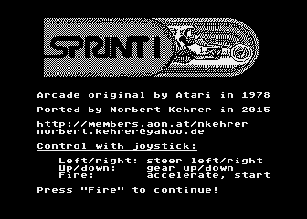
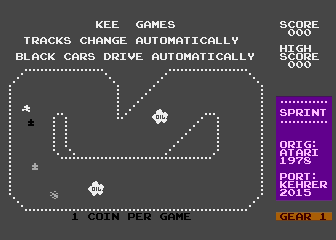
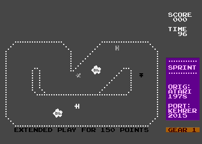
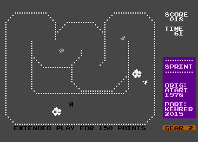

I now ported that nice game to the Atari 800XL computer by just running the orignal arcade game program on the Atari. The arcade machine's video and sound hardware are emulated by specific Atari 800 XL routines. In the homecomputer version the game has to be played with the joystick instead of the original's steering, gearshift, and accelerator pedal.
The program can be downloaded as an executable file here: sprint1.xex
It is also available as an atr file here: sprint1.atr
Below you see some screenshots of the running game:
|  |  |
|  |  |
Have fun!